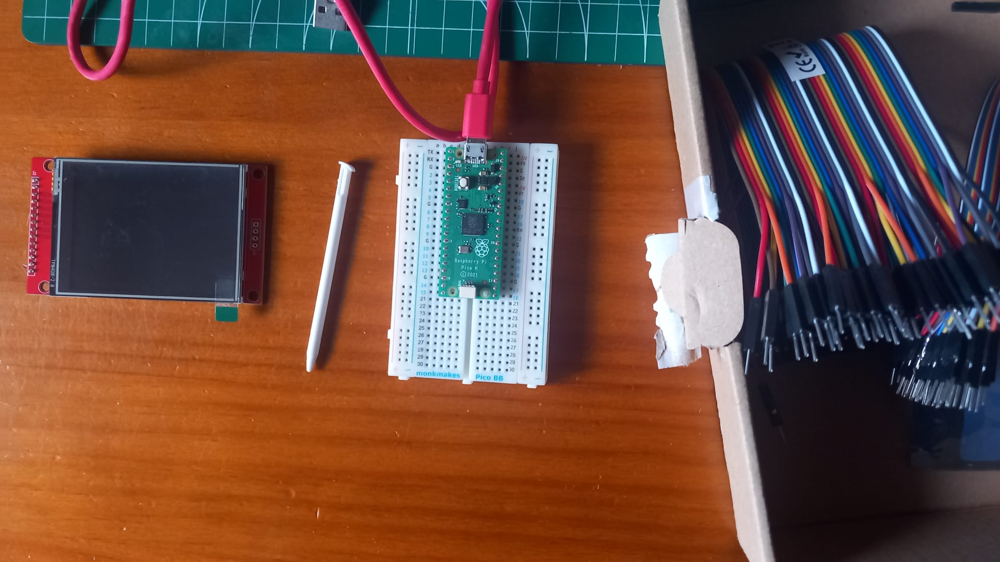

I bought a Raspberry Pi Pico
Christmas season it's almost over! I hope you had happy holidays! I didn't do anything too crazy this year, but I got to meet with some cool friends I don't usually see, so I had plenty of fun.
This last semester I had a really cool (but tough) class: hardware project. In this class we had to make a really small game that could run in two boards. We learned a lot about embedded programming: peripheral control, interrupt handling, energy consumption, and more. After finishing it, I've been wanting to make a cool embedded project (with a touch of moe personality, of course).
I think I've been a good kid this year, so I asked old santa to bring me a microcontroller, and he delivered :) . Now I've got a Raspberry Pi Pico, with an LCD screen too!
The screen has a 320 x 240 resolution, which is exactly like the 3ds bottom screen. It uses an ILI9341 controller and you can talk to it via SPI protocol. It also has touch controls wich I din't really need, but maybe something fun can come out of it.
Here is how it looks connected to the RP:
[INSERTAR AQUI IMAGEN DE LA CONEXION]
It's nothing too complicated, I just connected the spi pins (and some few more) and it's set. It would've been nice to be able to pin the screen on to the breadboard, but there wasn't enough space, so I had to use male to female cables.
I already have a project in mind, but with exams coming up I don't really have time for all that, so I've just been learning how to use the SPI protocol to fill the whole screen with a solid color. Sadly, there is plenty of tearing when you draw and update the whole screen, so in my project I'll have to be smart to only update the parts that changed each frame and not redraw static elements like the background.
Here you can see a demo of a small gradient between blue and pink:
[INSERTAR GIF DE LA PANTALLA]
This is as far as I'll go this time, but I'm dying to have some more free time to continue working on this. I'll probably have to make multiple articles for the whole projects, so please wait patiently,
Thanks for reading :)